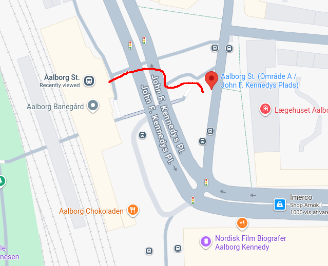
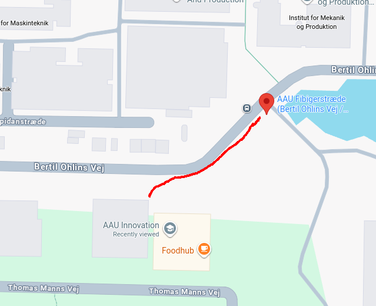

MMAD workshop will take place at AAU Innovation in Aalborg (Thomas Manns Vej 25, 9220 Aalborg Øst).
Buses 13, 70, 71, 200, and train 69 regularly go to the main train station.
Take the bus 2 towards “Universitetet”, and stop in “AAU Fibigerstræde (Bertil Ohlins Vej / Aalborg)”. The frequency of this bus in the morning is every 10 minutes.

